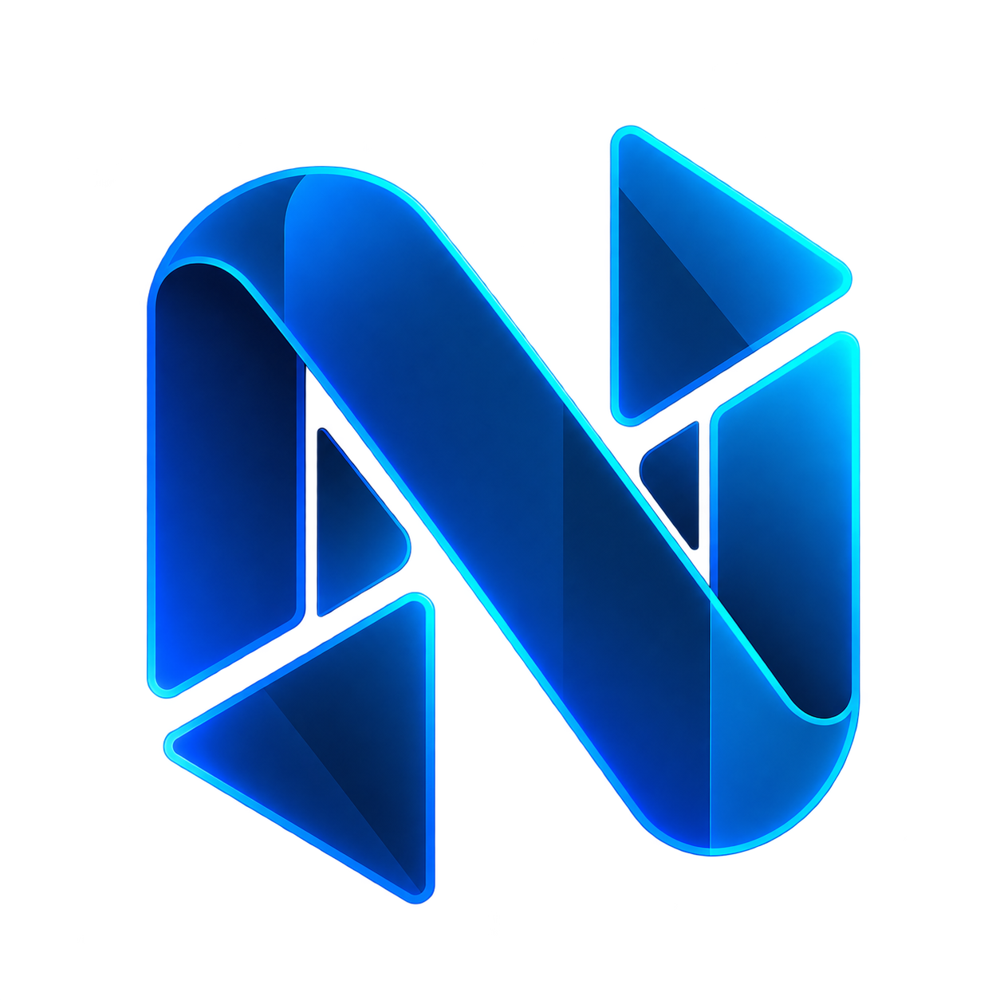

Bem-vindo ao
Nodus Connect
Instalador do Nodus Connect, o acesso
remoto simples, rápido e seguro.
ϟConexão rápida e estável
◇Segurança de ponta
▣Compatível com Windows
⚙Leve e fácil de usar

Nodus Connect – InstalaçãoInstalador do Nodus Connect, o acesso
remoto simples, rápido e seguro.
Leia os termos abaixo antes de continuar.
Texto provisório para validação interna do instalador.
O Nodus Connect é um software de acesso remoto. Ao prosseguir, você declara que utilizará o programa somente em computadores próprios ou mediante autorização expressa do responsável.
1. Uso autorizado
É proibido utilizar o Nodus Connect para acesso não autorizado, violação de privacidade, fraude ou qualquer atividade contrária à legislação aplicável.
2. Segurança
O usuário é responsável por proteger suas credenciais, códigos de acesso e dispositivos confiáveis.
3. Atualizações
O aplicativo pode receber atualizações para segurança, estabilidade e compatibilidade.
4. Dados locais e licenciamento
A opção de remoção de dados apaga as configurações locais. Uma cópia criptografada do ID é mantida no perfil do Windows para recuperação após reinstalação. Para preservar a franquia, identificadores técnicos do computador são transformados criptograficamente antes do envio ao servidor; o vínculo e o histórico de uso permanecem após a desinstalação. Solicitações de revisão podem ser enviadas a kauee.teixeiraaa@gmail.com.
Este texto deverá ser substituído pelos termos jurídicos definitivos antes da distribuição comercial.
Selecione a pasta onde o Nodus Connect será instalado.
Aguarde enquanto os arquivos estão sendo copiados.
Preparando instalação...
O Nodus Connect foi instalado com sucesso
em seu computador.
Remova o Nodus Connect do seu computador.